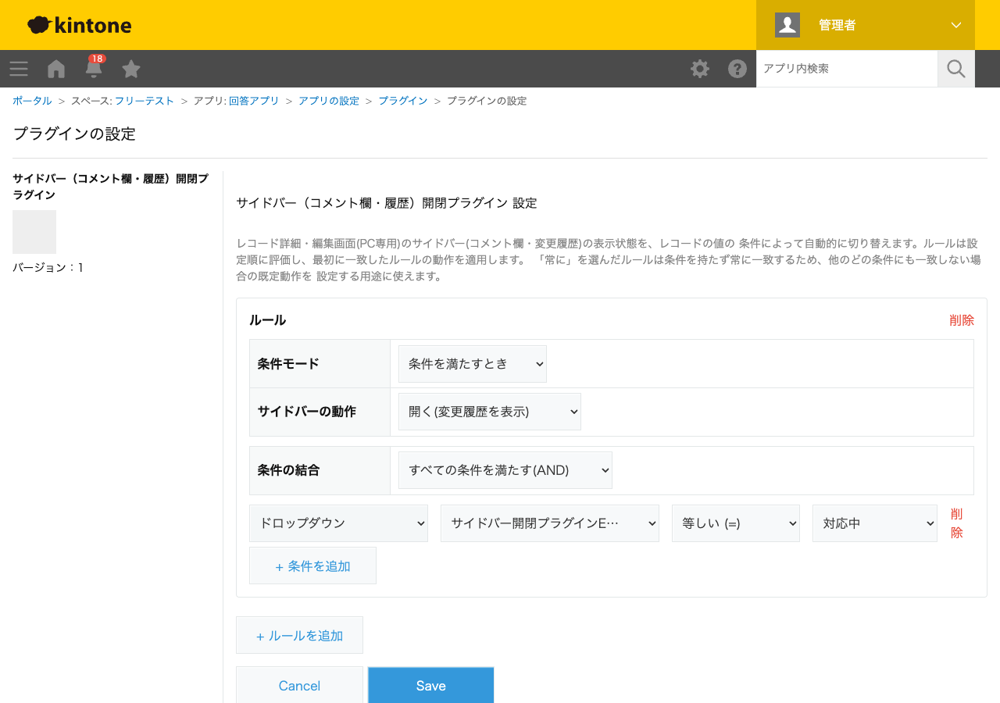

GovAppsプラグイン 安全性を確認できる無料kintoneプラグイン集
レコード詳細・編集画面(PC専用)のサイドバー(コメント欄・変更履歴)の表示状態を、レコードの値の 条件によって自動的に切り替えます。日時・ラジオボタン・ドロップダウン・チェックボックス・ プロセス管理ステータスを組み合わせた条件(AND/OR結合)でルールを複数設定でき、「常に」を選んだ ルールを使えば、他のどの条件にも一致しない場合の既定動作も設定できます。
下書き中・差し戻し中など、まだコメントでのやり取りが必要ない状態のレコードでは、詳細・編集画面を開いた瞬間にサイドバーを閉じておくことで、画面を広く使えるようにできます。
プロセス管理のステータスが「承認待ち」や「差し戻し」になったレコードでは、開いた瞬間にコメント欄が表示されるようにしておけば、担当者がコメント履歴を見落とすリスクを減らせます。変更履歴を優先して見せたい状態では、履歴タブを開く設定にすることもできます。
本プラグインはPC専用です(kintone.app.record.showSideBar()自体がモバイル非対応のため)。ルールは設定順に評価し、最初に一致したルールの動作が適用されます。「常に」を選んだルールは条件を持たず常に一致するため、優先順位の最後に置くと既定動作として使えます。
kintoneセキュアコーディングガイドラインに沿って実装時にチェックしています。特に重要な点は次のとおりです。
kintone.app.record.showSideBar())のみで行います。kintone.api()(kintone自身への呼び出し専用の内部ラッパー)経由でGET /k/v1/app/status.jsonを呼びます。外部サーバーへの通信・外部ライブラリは一切使用していません。textContentまたは<template>要素のcloneNodeで行っており、innerHTMLへの外部由来文字列の埋め込みはありません。詳細な確認項目・確認日は下記GitHubのチェックリストに全項目を掲載しています。

レコード画面側はkintone.app.record.showSideBar()というJavaScript APIのみで完結し、
REST APIは実行しません。設定画面を開いたときのみ、プロセス管理のステータス名一覧を取得するために
REST API(GET /k/v1/app/status.json)を1回実行しますが、これは管理者が設定画面を
開いたときだけであり、レコードの閲覧・保存のたびに実行されるものではありません。